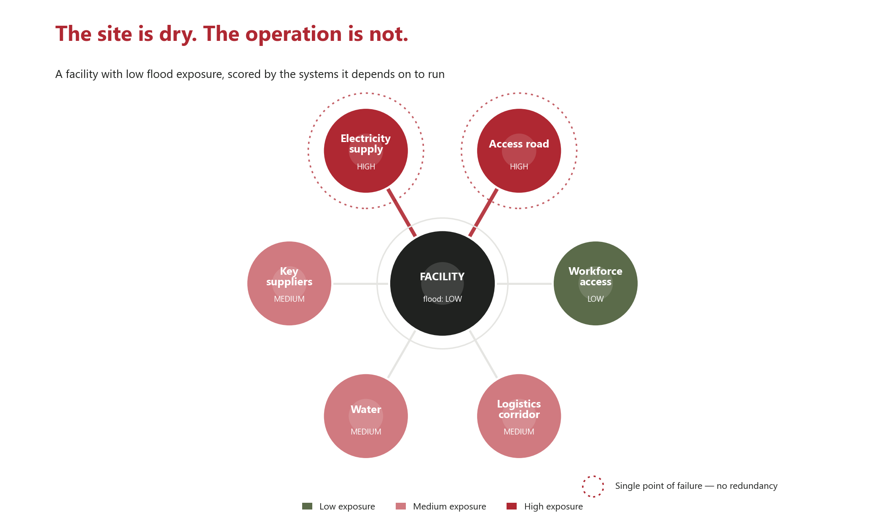

Insight · Territorial Risk
The hidden territorial dependencies of business continuity
Picture a facility that survives the storm. The building is dry, the machines are intact, the staff are safe — and nothing can be produced or shipped for a week. What failed was not the site. It was everything the site quietly depends on to function: the road in, the power line, the water main, the supplier two valleys away, the corridor to the port. So the strategic question for any operator is not simply whether the site is exposed. It is whether the whole operating system can keep running when the territory around it cannot.
Intact is not the same as operational
Business-continuity practice has made this point for years. The international standard for continuity management, ISO 22301, frames resilience around the dependencies and resources an activity needs — not the four walls it occupies. Yet most site risk reviews still stop at the property line. A hazard map tells you whether water, fire or ground movement will reach the plot. It says nothing about whether the only access road sits on the valley floor, or whether the substation that feeds you is in the flood zone you just avoided.
The 2024 Valencia flood made the gap concrete: plants above the modelled flood extent still declared force majeure, because the roads, the workforce and the substations around them were under water. Spending to protect those buildings would not have kept the sites open. The damage was territorial, not structural.
Map the operating system, not the perimeter
Mapping dependencies means tracing, for each critical activity, the external systems it cannot run without: access, energy, water, telecoms, key suppliers, logistics corridors and the routes the workforce uses to arrive. Each link is then tested on two axes that are easy to confuse. The first is hazard — how likely is this element to be hit? The second is operational vulnerability — if it is hit, does production stop, slow, or barely notice?
A high hazard on a link you can substitute in a day is noise. A modest hazard on a link with no alternative is what ends up in the incident report. The dependencies that score high on both and carry no redundancy are single points of failure — the places where one disruption cascades through the entire system.
A clean plot that still fails
Consider a hypothetical industrial facility built on raised ground. Its direct flood exposure is genuinely low — the hazard map is clean. But the single access road runs along the river, and the substation that powers the line sits on the same floodplain. Scored territorially, the site reads low, while the road and the electricity supply read high, each with no second feed and no alternative route.
The map below shows the pattern: a safe plot ringed by two critical dependencies that are anything but. This is the risk a perimeter-based review never sees — and the research on interdependent infrastructure, from Rinaldi and colleagues onward, shows that these cascading failures are the normal case, not the exception.

What this changes for decision-makers
The useful question is no longer how to harden the building. It is which dependency, if it fails, takes the operation down — and whether it has a backup. Terranova scores every material dependency with TEAM, our Territorial Exposure Assessment Method: each link is rated by whether a disruption would stop, slow or barely affect the operation, then assigned one of four postures — reactive, passive, objective or urgent. A clean plot with an urgent single-point dependency gets capital before a cosmetic flood wall ever does. Continuity priorities follow the system, not the site.
Exposure is not a property of the plot. It is a property of the operating system. The site may be the last thing to fail — which is exactly why reading only the site is the most expensive assumption in business continuity.
Terranova Strategy
Territorial Exposure Assessment
Territorial Exposure Assessment maps the full operating system around a facility — access, energy, water, suppliers and logistics — overlays official hazard data, and scores each dependency with TEAM, so continuity capital goes to the single points of failure a plot-level review never shows.
Explore service